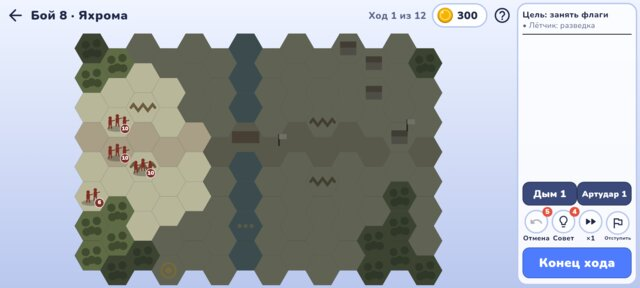

Стальной фронт
Октябрь 1941 года. Враг у стен Москвы, и только от твоих приказов зависит, устоит ли фронт.
«Стальной фронт» — пошаговая стратегия о Второй мировой войне. На карте кампании ты решаешь, какой регион отбить следующим, а каждый бой — тактическое сражение на гексах: стрелки в окопах, автоматчики, пулемёты, противотанковые пушки и Т-34. Укрытия берегут людей, удар в борт пробивает броню, пулемёт прижимает врага к земле, а туман войны прячет засады — и для противника тоже.

- Кампания «Битва за Москву»: 10 регионов от Крюково до Можайска, контратаки врага и бои за оборону, фронтовые сводки о реальных событиях.
- Тактика на гексах: местность и окопы, ответный огонь, «Оборона», мораль, туман войны и прогноз потерь перед каждой атакой.
- Штаб перед боем: выбери отряды, пополни потери, купи новые, закажи артудар.
- Ветераны: отряды переходят из боя в бой, получают звёзды и звания, их командиров ты знаешь по фамилиям.
- Поддержка и задания на поле боя: артудар и дымовая завеса, рация, склад и сбитый лётчик.
- Честный противник: ИИ видит только то, что видят его солдаты; три уровня сложности.
- Свернул посреди боя — вернёшься в тот же ход.
- Операция дня и ежедневные задания; играй без интернета, на русском и английском.
- Скоро: кампании за США и Британию.
Без крови и без нацистской символики: только история фронта. По желанию — одно напоминание, если пропадёшь на неделю; выключается в настройках. Фронт ждёт, командир!